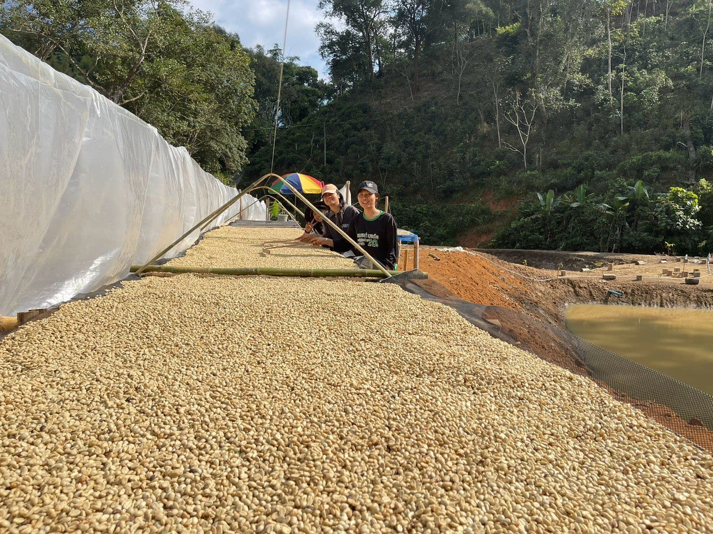
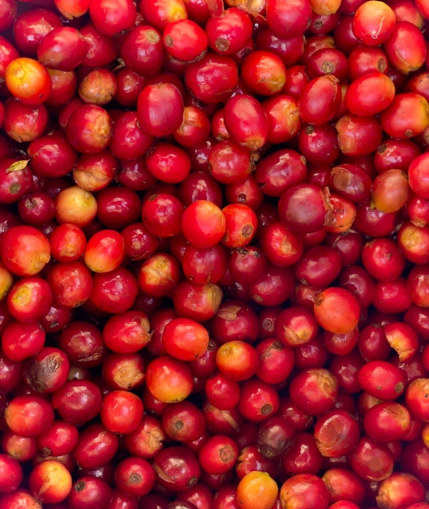
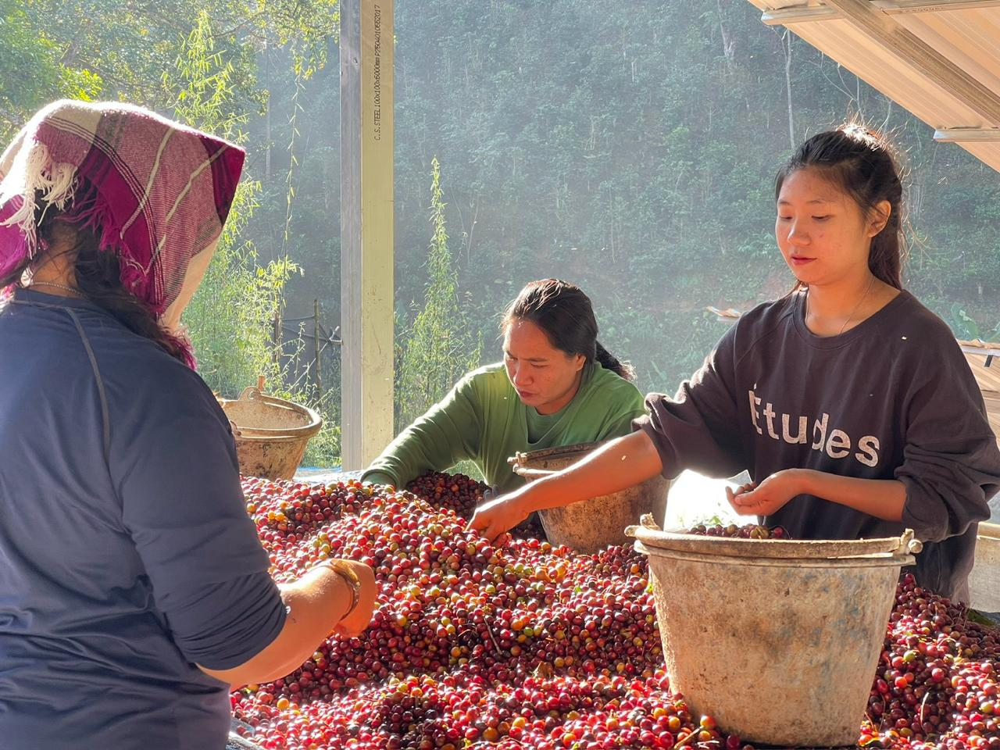
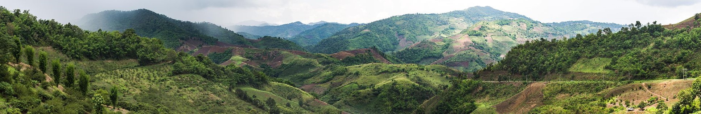
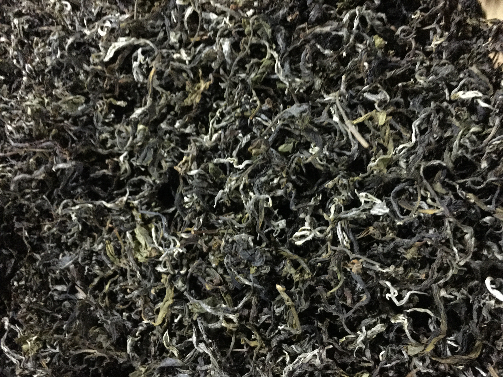
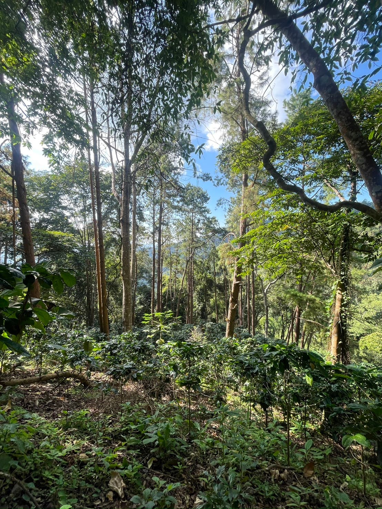

Specialty coffee, teas, and produce from a single estateกาแฟพิเศษ ชา และผลผลิตจากไร่เดียว
N2G is a team based in Doi Tung, Chiang Rai. We grow, process, and roast everything on-site, working directly with the farming communities who have cultivated this land for generations.N2G เป็นทีม ในดอยตุง เชียงราย เราปลูก แปรรูป และคั่วทุกอย่างที่ไร่ ทำงานร่วมกับชุมชนเกษตรกรที่สืบทอดผืนดินนี้มาหลายชั่วอายุคน
From the estateจากไร่ของเรา
Forest coffeeกาแฟป่า
Arabica. Catimor, Caturra, Catuai. Fully washed, sun-dried on raised beds. Available as green beans or roasted.อราบิก้า Catimor, Caturra, Catuai ล้างสะอาด ตากแดดบนแคร่ยกสูง มีทั้งกรีนบีนและคั่วแล้ว
15 teas from wild and cultivated trees. Oolongs, wild red teas, aged puer, white tea, flower blends, and natural matcha. Some gushu trees are 200–500 years old.ชา 15 ชนิดจากต้นชาป่าและต้นชาปลูก อู่หลง ชาแดงป่า ผู่เอ๋อร์บ่ม ชาขาว ชาดอกไม้ และมัทฉะไทย ต้นชากู่ซู่บางต้นอายุ 200–500 ปี
Rare
Oolongอู่หลง
Oriental Beauty
Once-a-year harvest. Tea grasshopper bites create the signature profile.เก็บเกี่ยวปีละครั้ง ตั๊กแตนชากัดใบสร้างโปรไฟล์เฉพาะตัว
Aged 8yr
Raw Puerผู่เอ๋อร์ดิบ
Gushu Sheng Puer
Wild ancient trees. Jasmine, sweetness, agarwood.ต้นชาป่าโบราณ มะลิ หวาน กฤษณา
Red Teaชาแดง
Wild Red Tea
Flora, fruity, good body. Great for cafés.ดอกไม้ ผลไม้ บอดี้ดี เหมาะสำหรับร้านกาแฟ
Green Teaชาเขียว
Matcha
100% natural.100% ธรรมชาติ
See all 15 teas →ดูชาทั้ง 15 ชนิด →
Events & tastingsอีเวนต์และชิม
Cupping sessions, tea tastings, farm visits, and pop-ups. Chiang Rai and Bangkok.คัปปิ้ง ชิมชา เยี่ยมชมไร่ และป๊อปอัพ เชียงรายและกรุงเทพ
See events →ดูอีเวนต์ →
Wholesaleขายส่ง
We work with cafés, hotels, restaurants, roasters, and anyone curious about our products. Samples available on request.เราทำงานร่วมกับร้านกาแฟ โรงแรม ร้านอาหาร โรสเตอร์ และทุกคนที่สนใจผลิตภัณฑ์ของเรา ตัวอย่างสินค้ามีให้ตามคำขอ
Arabica from our single estate at Doi Tung. Catimor, Caturra, and Catuai varieties grown at 1,200–1,400m. Fully washed and sun-dried on raised beds. Available as green beans or roasted to your specification.อราบิก้าจากไร่เดียวที่ดอยตุง พันธุ์ Catimor, Caturra, Catuai ปลูกที่ 1,200–1,400 เมตร ล้างสะอาดและตากแดดบนแคร่ยกสูง มีทั้งกรีนบีนหรือคั่วตามสั่ง
Mellow body with lingering sweet finishบอดี้นุ่มนวลกับฟินิชหวานยาวนาน
From estate to cupจากไร่สู่แก้ว
Our coffee grows under forest canopy at 1,200–1,400m. Cherries are picked by hand at peak ripeness and sorted on-site. Every batch is fully washed and sun-dried on raised beds. Roasting is done on-site to your specification, or we supply green beans direct to roasters worldwide. Single estate, full traceability.กาแฟของเราปลูกใต้ร่มเงาป่าที่ความสูง 1,200–1,400 เมตร เชอรี่ถูกเก็บด้วยมือเมื่อสุกเต็มที่และคัดแยกที่ไร่ ทุกล็อตล้างสะอาดและตากแดดบนแคร่ยกสูง คั่วที่ไร่ตามสเปคของคุณ หรือส่งกรีนบีนตรงถึงโรสเตอร์ทั่วโลก ไร่เดียว ตรวจสอบย้อนกลับได้
Packagingบรรจุภัณฑ์
Available as roasted beans, Nespresso-compatible capsules, and single-serve drip bags.มีในรูปแบบเมล็ดคั่ว แคปซูลที่ใช้กับ Nespresso ได้ และดริปแบ็กเสิร์ฟเดี่ยว



Every bag traces back to one mountain, one team, one process. From cherry to cup — nothing leaves our hands.ทุกถุงสืบย้อนกลับไปยังภูเขาเดียว ทีมเดียว กระบวนการเดียว จากเชอรี่สู่แก้ว — ไม่เคยออกจากมือเรา
Interested? Contact us →สนใจ? ติดต่อเรา →
← Backกลับ
Heritage tea · TeaOrganiqueชามรดก · TeaOrganique
15 teas from wild and cultivated treesชา 15 ชนิดจากต้นชาป่าและต้นชาปลูก
Oolongs, wild red teas, aged raw puer, white tea, flower blends with mountain osmanthus and rose, and a natural matcha. The wild gushu teas come from ancient trees 200–500 years old.อู่หลง ชาแดงป่า ผู่เอ๋อร์บ่ม ชาขาว ชาดอกไม้ และมัทฉะไทย ต้นชากู่ซู่บางต้นอายุ 200–500 ปี
Rare
Oolong
Oriental Beauty
Once-a-year harvest. Tea grasshopper bites create the signature profile.เก็บเกี่ยวปีละครั้ง ตั๊กแตนชากัดใบสร้างโปรไฟล์เฉพาะตัว
Oolong
High Mountain Oolong
Lightly oxidized spring harvest. Orchid-like flora.เก็บเกี่ยวฤดูใบไม้ผลิ ออกซิไดซ์เบาๆ กลิ่นกล้วยไม้
Red Tea
Wild Red Tea
Flora, fruity, good body. Perfect breakfast tea for cafes.ดอกไม้ ผลไม้ บอดี้ดี ชาเช้าที่สมบูรณ์แบบสำหรับร้านกาแฟ
Red Tea
Wild Red Tea (Medium Roast)
Smokiness enhances the sweet aroma.ความหอมควันช่วยเพิ่มกลิ่นหวาน
100% natural. No coloring or additives.100% ธรรมชาติ ไม่มีสีหรือสารเจือปน
Packagingบรรจุภัณฑ์
Available as loose leaf in sampler sets and bulk.มีทั้งใบชาแบบชุดชิมและแบบเบิ้ล


Interested? Contact us →สนใจ? ติดต่อเรา →
← Backกลับ
Events & tastingsอีเวนต์และชิม
Learn with usเรียนรู้กับเรา
We host cupping sessions, tea tastings, and farm visits where café owners, buyers, and enthusiasts can try our current lots and connect with the team. We also participate in pop-ups and markets around Thailand.เราจัดคัปปิ้ง ชิมชา และเยี่ยมชมไร่สำหรับเจ้าของร้าน ผู้ซื้อ และผู้สนใจ เรายังเข้าร่วมป๊อปอัพและตลาดทั่วประเทศไทย
Reach out to book a visit with us.ติดต่อเราเพื่อจองเยี่ยมชม
Coffee cuppingคัปปิ้งกาแฟ
Tea tastingชิมชา
Doi Tung · Farm visitดอยตุง · เยี่ยมชมไร่
Pop-up tastingป๊อปอัพชิม
Doi Tung · Cupping sessionดอยตุง · เซสชันคัปปิ้ง
Doi Tung · Educational tastingดอยตุง · ชิมเพื่อเรียนรู้
Doi Tung · Mountain Terraceดอยตุง · ระเบียงภูเขา
Tea cuppingคัปปิ้งชา
What we offerสิ่งที่เรานำเสนอ
Coffee cuppingคัปปิ้งกาแฟ
Sample current lots and learn what makes our forest coffee unique.ชิมล็อตปัจจุบันและเรียนรู้สิ่งที่ทำให้กาแฟป่าพิเศษ
Tea tastingชิมชา
Guided session through our 15 heritage teas from wild and cultivated trees.เซสชันชิมชามรดก 15 ชนิดจากต้นชาป่าและต้นชาปลูก
Farm visitเยี่ยมชมไร่
Walk the estate, see processing, taste at the source. By appointment.เดินชมไร่ ดูการแปรรูป ชิมตรงจากแหล่ง นัดหมายล่วงหน้า
Pop-ups & marketsป๊อปอัพและตลาด
We participate in coffee and tea events across Thailand.เราเข้าร่วมงานกาแฟและชาทั่วประเทศไทย
Amphoe Mae Ai, Chiang Rai. Since 2018.อำเภอแม่อาย เชียงราย ตั้งแต่ 2018

N2G — Native2Global — was founded in 2018 to connect the agricultural knowledge of Doi Tung's highland communities with the wider market.N2G — Native2Global — ก่อตั้งในปี 2018 เพื่อเชื่อมโยงความรู้ด้านการเกษตรของชุมชนบนดอยตุงกับตลาดที่กว้างขึ้น
The team works directly with local growers to process and develop specialty products while maintaining the ecology of the mountain and creating sustainable livelihoods.ทีมงานทำงานร่วมกับเกษตรกรท้องถิ่นโดยตรงเพื่อแปรรูปและพัฒนาผลิตภัณฑ์พิเศษ
Everything is grown and processed on the estate. We pick, wash, dry, roast, cure, and age ourselves.ทุกอย่างปลูกและแปรรูปที่ไร่ เราเก็บ ล้าง ตาก คั่ว บ่ม และหมักเอง
Herbs, flowers, and ingredients from Doi Tungสมุนไพร ดอกไม้ และวัตถุดิบจากดอยตุง
Beyond coffee and tea, our estate grows ginger, herbs, and edible flowers at elevation. Harvested by hand, dried and processed on-site. Available for wholesale and direct purchase.นอกจากกาแฟและชา ไร่ของเราปลูกขิง สมุนไพร และดอกไม้กินได้บนที่สูง เก็บเกี่ยวด้วยมือ ตากแห้งและแปรรูปที่ไร่ มีทั้งขายส่งและขายตรง
Ginger & Turmericขิงและขมิ้น
Mountain Gingerขิงภูเขา
Grown at altitude. Available fresh or dried. Strong aroma.ปลูกบนที่สูง มีทั้งสดและแห้ง กลิ่นแรง
Black Ginger (Krachai Dam)กระชายดำ
Thai superfood. Dried slices or powder.สมุนไพรซูเปอร์ฟู้ดไทย แผ่นแห้งหรือผง